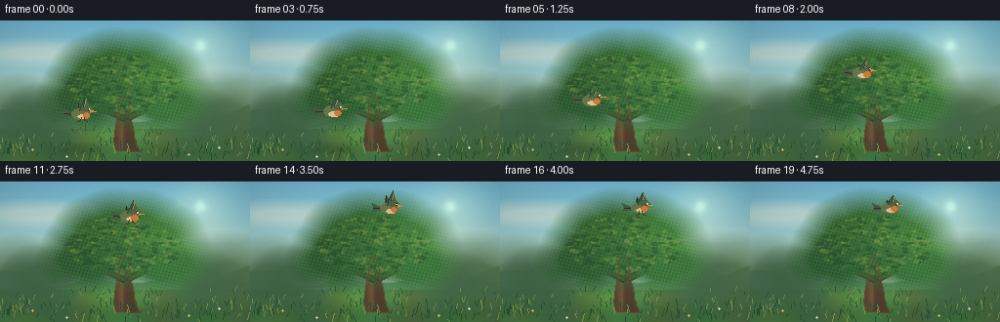
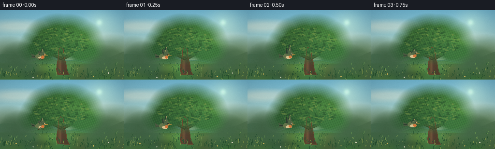

CODING AGENTS AS PIXEL WORLD MODELS
traex/DeepSeek-V4.1-Flash · dynamic_spatial_relationship_0048
点击播放 · 原生 RGB 像素
逐轮保存的候选
回放视频、检查图与代码变化。
每份候选均可单独播放。实际图片检查记录在下方工具轨迹中。
候选 01播放与检查图
点击播放 · 原生 RGB 像素

展开代码变化
--- 上一保存版本
+++ 本次保存版本
@@ -0,0 +1,380 @@
+"""Render the requested bird-and-tree shot with local procedural geometry."""
+
+from pathlib import Path
+
+import cv2
+import numpy as np
+from PIL import Image, ImageDraw, ImageFilter
+
+import artifact_io
+
+
+CASE_DIR = Path(__file__).resolve().parent
+WIDTH, HEIGHT, FRAME_COUNT, FPS = 256, 144, 20, 4.0
+SIZE = (WIDTH, HEIGHT)
+
+
+def smoothstep(edge0, edge1, value):
+ x = np.clip((value - edge0) / (edge1 - edge0), 0.0, 1.0)
+ return x * x * (3.0 - 2.0 * x)
+
+
+def lerp(a, b, amount):
+ return a + (b - a) * amount
+
+
+def vertical_gradient(top, bottom):
+ y = np.linspace(0.0, 1.0, HEIGHT, dtype=np.float32)[:, None, None]
+ column = np.asarray(top, np.float32) * (1.0 - y) + np.asarray(bottom, np.float32) * y
+ return np.broadcast_to(column, (HEIGHT, WIDTH, 3)).copy()
+
+
+def build_background():
+ sky = vertical_gradient((117, 189, 217), (220, 228, 187))
+ x = np.arange(WIDTH, dtype=np.float32)[None, :, None]
+ y = np.arange(HEIGHT, dtype=np.float32)[:, None, None]
+ # A low, warm sun and soft atmospheric haze.
+ sun = np.exp(-((x - 205.0) ** 2 / (2.0 * 23.0**2) + (y - 25.0) ** 2 / (2.0 * 20.0**2)))
+ sky += sun * np.asarray((38.0, 29.0, 12.0), np.float32)
+ sky += np.exp(-((x - 205.0) ** 2 + (y - 25.0) ** 2) / (2.0 * 4.2**2)) * np.asarray((42, 40, 22), np.float32)
+ haze = np.exp(-((y - 85.0) / 23.0) ** 2) * 0.26
+ sky = sky * (1.0 - haze) + np.asarray((219, 224, 189), np.float32) * haze
+ return np.clip(sky, 0, 255)
+
+
+def ellipse_mask(cx, cy, rx, ry, feather=1.0):
+ yy, xx = np.mgrid[0:HEIGHT, 0:WIDTH].astype(np.float32)
+ distance = np.sqrt(((xx - cx) / rx) ** 2 + ((yy - cy) / ry) ** 2)
+ return np.clip((1.0 + feather - distance) / feather, 0.0, 1.0)
+
+
+def blend_layer(image, color, mask):
+ color = np.asarray(color, np.float32)
+ alpha = mask[:, :, None]
+ image[:] = image * (1.0 - alpha) + color * alpha
+
+
+def build_fixed_scene():
+ image = build_background()
+
+ # Distant hills and a pale mountain shoulder create depth behind the meadow.
+ yy, xx = np.mgrid[0:HEIGHT, 0:WIDTH].astype(np.float32)
+ far_hill = 95.0 - 7.0 * np.sin((xx - 5.0) / 34.0) - 4.0 * np.sin(xx / 14.0 + 1.4)
+ far_mask = np.clip(yy - far_hill + 1.0, 0, 1)
+ far_color = np.stack(
+ [
+ 111.0 + 10.0 * np.sin(xx / 31.0),
+ 153.0 + 9.0 * np.sin(xx / 24.0 + 0.7),
+ 130.0 + 5.0 * np.cos(xx / 21.0),
+ ],
+ axis=2,
+ )
+ image = image * (1.0 - far_mask[:, :, None]) + far_color * far_mask[:, :, None]
+
+ near_hill = 105.0 + 4.0 * np.sin((xx + 8.0) / 23.0) + 2.0 * np.cos(xx / 10.0)
+ near_mask = np.clip(yy - near_hill + 1.0, 0, 1)
+ near_color = np.stack(
+ [
+ 96.0 + 7.0 * np.sin(xx / 19.0),
+ 146.0 + 8.0 * np.cos(xx / 27.0),
+ 94.0 + 5.0 * np.sin(xx / 18.0 + 0.4),
+ ],
+ axis=2,
+ )
+ image = image * (1.0 - near_mask[:, :, None]) + near_color * near_mask[:, :, None]
+
+ # Meadow floor, broken into subtle horizontal color bands.
+ ground = yy >= 111.0
+ ground_color = np.stack(
+ [
+ 78.0 + 8.0 * np.sin(xx / 12.0),
+ 126.0 + 11.0 * np.sin(xx / 16.0 + 0.6),
+ 69.0 + 5.0 * np.cos(xx / 10.0),
+ ],
+ axis=2,
+ )
+ light_path = np.exp(-((xx - 131.0) / 33.0) ** 2) * np.exp(-((yy - 124.0) / 19.0) ** 2)
+ ground_color += light_path[:, :, None] * np.asarray((18.0, 22.0, 10.0), np.float32)
+ image = np.where(ground[:, :, None], ground_color, image)
+
+ # Far tree line, deliberately lower contrast than the subject.
+ rng = np.random.default_rng(17)
+ for cx, cy, rx, ry, color in [
+ (18, 103, 21, 17, (70, 108, 76)),
+ (42, 100, 15, 13, (67, 103, 72)),
+ (231, 102, 25, 18, (76, 113, 73)),
+ (211, 104, 14, 12, (72, 109, 75)),
+ ]:
+ blend_layer(image, color, ellipse_mask(cx, cy, rx, ry, 2.0) * 0.86)
+ for _ in range(100):
+ gx = int(rng.integers(0, WIDTH))
+ gy = int(rng.integers(112, 140))
+ length = int(rng.integers(2, 7))
+ shade = rng.choice([(48, 91, 57), (103, 148, 83), (128, 158, 89), (56, 104, 61)])
+ cv2.line(image, (gx, gy), (gx + int(rng.integers(-2, 3)), gy - length), tuple(map(int, shade)), 1, cv2.LINE_AA)
+
+ # Wispy clouds, made from stretched translucent ellipses.
+ cloud_layer = np.zeros_like(image)
+ cloud_alpha = np.zeros((HEIGHT, WIDTH), np.float32)
+ for cx, cy, rx, ry, strength in [
+ (35, 33, 26, 5, 0.48),
+ (51, 30, 17, 4, 0.40),
+ (164, 53, 31, 4, 0.26),
+ (181, 50, 19, 3, 0.22),
+ ]:
+ mask = ellipse_mask(cx, cy, rx, ry, 2.4) * strength
+ cloud_alpha = np.maximum(cloud_alpha, mask)
+ cloud_layer[:] = (235, 239, 218)
+ image = image * (1.0 - cloud_alpha[:, :, None]) + cloud_layer * cloud_alpha[:, :, None]
+
+ # Tree cast shadow on the meadow.
+ shadow = ellipse_mask(139, 136, 42, 4.8, 3.0) * 0.27
+ blend_layer(image, (39, 68, 43), shadow)
+
+ # Main trunk with a slight taper and exposed roots.
+ def trunk_polygon(offset=0.0):
+ return np.asarray(
+ [
+ (119 + offset, 133),
+ (116 + offset, 123),
+ (118 + offset, 108),
+ (121 + offset, 94),
+ (121 + offset, 82),
+ (125 + offset, 76),
+ (131 + offset, 81),
+ (132 + offset, 96),
+ (136 + offset, 109),
+ (138 + offset, 124),
+ (143 + offset, 134),
+ ],
+ np.int32,
+ )
+
+ trunk_mask_image = Image.new("L", SIZE, 0)
+ trunk_draw = ImageDraw.Draw(trunk_mask_image)
+ trunk_draw.polygon([tuple(p) for p in trunk_polygon()], fill=255)
+ trunk_mask = np.asarray(trunk_mask_image, np.float32) / 255.0
+ trunk_mask = cv2.GaussianBlur(trunk_mask, (0, 0), 0.55)
+ trunk_color = np.stack(
+ [
+ 84.0 + 17.0 * np.exp(-((xx - 122.0) / 4.0) ** 2),
+ 65.0 + 13.0 * np.exp(-((xx - 122.0) / 4.0) ** 2),
+ 46.0 + 8.0 * np.exp(-((xx - 124.0) / 6.0) ** 2),
+ ],
+ axis=2,
+ )
+ trunk_highlight = np.exp(-((xx - 124.5) / 2.2) ** 2) * (yy > 85) * (yy < 131) * 0.30
+ trunk_color += trunk_highlight[:, :, None] * np.asarray((53, 38, 19), np.float32)
+ image = image * (1.0 - trunk_mask[:, :, None]) + trunk_color * trunk_mask[:, :, None]
+
+ # Branches are drawn before the crown, with their tips tucked into the leaves.
+ branches = [
+ [(126, 91), (110, 81), (91, 72)],
+ [(129, 90), (146, 78), (166, 70)],
+ [(126, 100), (108, 91), (87, 86)],
+ [(132, 99), (149, 90), (171, 86)],
+ [(129, 83), (123, 66), (116, 54)],
+ [(129, 82), (138, 61), (149, 51)],
+ ]
+ for branch in branches:
+ cv2.polylines(image, [np.asarray(branch, np.int32)], False, (65, 51, 36), 5, cv2.LINE_AA)
+ cv2.polylines(image, [np.asarray(branch, np.int32)], False, (93, 72, 48), 2, cv2.LINE_AA)
+
+ # The crown is a dense mass of overlapping leaf clusters with a sunlit right edge.
+ crown = np.zeros((HEIGHT, WIDTH), np.float32)
+ cluster_specs = [
+ (87, 69, 19, 16), (101, 56, 21, 18), (119, 50, 24, 18),
+ (139, 51, 25, 18), (157, 60, 23, 18), (170, 75, 20, 15),
+ (153, 77, 23, 16), (132, 71, 24, 17), (108, 74, 22, 16),
+ (119, 64, 19, 16), (146, 65, 20, 15), (79, 80, 18, 13),
+ (181, 84, 14, 11), (93, 84, 17, 13), (166, 88, 19, 12),
+ (121, 44, 17, 12), (143, 43, 15, 11),
+ ]
+ for cx, cy, rx, ry in cluster_specs:
+ crown = np.maximum(crown, ellipse_mask(cx, cy, rx, ry, 1.5))
+ crown = cv2.GaussianBlur(crown, (0, 0), 0.5)
+ base_leaf = np.stack(
+ [
+ 49.0 + 15.0 * smoothstep(70, 180, xx) + 8.0 * np.exp(-((yy - 48) / 19) ** 2),
+ 94.0 + 27.0 * smoothstep(70, 180, xx) + 9.0 * np.exp(-((yy - 46) / 17) ** 2),
+ 52.0 + 11.0 * smoothstep(80, 170, xx),
+ ],
+ axis=2,
+ )
+ leaf_texture = (
+ 7.0 * np.sin(xx * 1.7 + yy * 0.6)
+ + 5.0 * np.sin(xx * 0.41 - yy * 1.8)
+ + 3.0 * np.cos(xx * 2.4 + yy * 2.1)
+ )
+ base_leaf += leaf_texture[:, :, None] * np.asarray((0.55, 1.0, 0.43), np.float32)
+ rim = np.exp(-((yy - (53 + 0.18 * (xx - 120))) / 8.0) ** 2) * smoothstep(105, 184, xx) * 0.4
+ base_leaf += rim[:, :, None] * np.asarray((44, 51, 18), np.float32)
+ image = image * (1.0 - crown[:, :, None]) + base_leaf * crown[:, :, None]
+
+ # Leaf marks make the silhouette read as foliage rather than a flat blob.
+ leaf_layer = Image.new("RGBA", SIZE, (0, 0, 0, 0))
+ leaf_draw = ImageDraw.Draw(leaf_layer)
+ for _ in range(260):
+ angle = rng.uniform(0, np.pi * 2)
+ radius = np.sqrt(rng.uniform(0, 1))
+ cx = 127 + np.cos(angle) * radius * 58
+ cy = 65 + np.sin(angle) * radius * 30
+ if not crown[min(HEIGHT - 1, max(0, int(cy))), min(WIDTH - 1, max(0, int(cx)))] > 0.45:
+ continue
+ tone = rng.random()
+ if tone < 0.35:
+ color = (37, 77, 44, rng.integers(90, 150))
+ elif tone < 0.72:
+ color = (73, 123, 60, rng.integers(80, 140))
+ else:
+ color = (143, 163, 78, rng.integers(70, 125))
+ dx, dy = rng.uniform(-3.0, 3.0), rng.uniform(-1.2, 1.2)
+ leaf_draw.ellipse((cx - 2.4, cy - 1.1, cx + 2.4 + dx, cy + 1.1 + dy), fill=tuple(map(int, color)))
+ leaf_layer = leaf_layer.filter(ImageFilter.GaussianBlur(0.28))
+ leaf_rgba = np.asarray(leaf_layer, np.float32)
+ alpha = leaf_rgba[:, :, 3:4] / 255.0 * crown[:, :, None]
+ image = image * (1.0 - alpha) + leaf_rgba[:, :, :3] * alpha
+
+ # A slim warm rim on the trunk separates it from the dark crown.
+ cv2.polylines(image, [trunk_polygon()], True, (105, 77, 48), 1, cv2.LINE_AA)
+
+ # Scattered foreground grass and tiny flowers.
+ for _ in range(75):
+ gx = int(rng.integers(0, WIDTH))
+ gy = int(rng.integers(126, 144))
+ length = int(rng.integers(2, 9))
+ color = (43, 88, 52) if rng.random() < 0.65 else (133, 157, 79)
+ cv2.line(image, (gx, gy), (gx + int(rng.integers(-2, 3)), gy - length), color, 1, cv2.LINE_AA)
+ for fx, fy, color in [
+ (33, 132, (224, 195, 95)), (68, 139, (224, 224, 198)),
+ (193, 137, (226, 198, 103)), (224, 130, (233, 227, 200)),
+ ]:
+ cv2.circle(image, (fx, fy), 1, color, -1, cv2.LINE_AA)
+
+ return np.clip(image, 0, 255).astype(np.uint8)
+
+
+def draw_bird(image, cx, cy, flap_phase, scale=1.0):
+ """Draw a warm-breasted songbird with a readable side silhouette."""
+ # Work in a local, supersampled RGBA patch for smooth curves.
+ patch = Image.new("RGBA", (WIDTH, HEIGHT), (0, 0, 0, 0))
+ d = ImageDraw.Draw(patch)
+ s = scale
+
+ def p(x, y):
+ return (cx + x * s, cy + y * s)
+
+ # Tail, with two separated feather tips.
+ tail = [p(-7.5, -0.8), p(-17.5, -5.2), p(-16.0, 0.0), p(-18.0, 3.8), p(-7.0, 2.5)]
+ d.polygon(tail, fill=(75, 91, 66, 255))
+ d.line([p(-8.0, 0.3), p(-16.0, 0.0)], fill=(37, 53, 42, 255), width=max(1, round(s)))
+
+ # Far wing, angled behind the body.
+ far_lift = 7.0 * np.sin(flap_phase)
+ far_tip = p(-2.0, -10.0 - far_lift)
+ far_wing = [p(-2.5, -2.0), p(-3.0, -8.0 - far_lift * 0.5), far_tip, p(5.5, -2.4)]
+ d.polygon(far_wing, fill=(72, 89, 64, 255))
+ d.line([p(-2.0, -2.0), far_tip], fill=(39, 56, 45, 255), width=max(1, round(s)))
+
+ # Body and head.
+ d.ellipse((cx - 8.2 * s, cy - 5.3 * s, cx + 8.0 * s, cy + 5.5 * s), fill=(103, 119, 77, 255))
+ d.ellipse((cx + 3.0 * s, cy - 8.5 * s, cx + 12.0 * s, cy + 0.7 * s), fill=(91, 105, 69, 255))
+ # Cream belly and orange breast.
+ d.ellipse((cx - 2.5 * s, cy + 0.5 * s, cx + 9.0 * s, cy + 5.0 * s), fill=(222, 198, 147, 255))
+ d.ellipse((cx + 3.0 * s, cy - 1.1 * s, cx + 9.8 * s, cy + 4.3 * s), fill=(211, 122, 62, 255))
+ # Dark eye and beak.
+ d.ellipse((cx + 8.2 * s, cy - 5.1 * s, cx + 10.2 * s, cy - 3.2 * s), fill=(25, 28, 23, 255))
+ d.ellipse((cx + 9.0 * s, cy - 4.8 * s, cx + 9.8 * s, cy - 4.0 * s), fill=(234, 226, 185, 255))
+ d.polygon([p(10.5, -4.0), p(16.0, -2.7), p(10.7, -1.6)], fill=(202, 153, 65, 255))
+ # Near wing: broad, flapping, with visible feather notches.
+ near_lift = 8.0 * np.sin(flap_phase)
+ root_a = p(-1.0, -3.5)
+ root_b = p(6.0, -3.0)
+ shoulder = p(1.0, -8.5 - near_lift * 0.45)
+ tip = p(5.0, -15.5 - near_lift)
+ wing = [root_a, shoulder, tip, p(8.0, -9.0 - near_lift * 0.35), root_b]
+ d.polygon(wing, fill=(80, 102, 69, 255))
+ d.line([root_a, shoulder, tip], fill=(43, 65, 48, 255), width=max(1, round(1.1 * s)))
+ d.line([p(4.5, -8.0 - near_lift * 0.5), p(6.2, -13.8 - near_lift)], fill=(156, 153, 94, 255), width=1)
+ d.line([p(3.0, -7.0 - near_lift * 0.45), p(4.5, -12.0 - near_lift)], fill=(43, 65, 48, 255), width=1)
+ # Tiny legs while perched.
+ if abs(near_lift) < 1.8:
+ d.line([p(1.0, 4.2), p(0.0, 7.0), p(-2.5, 7.8)], fill=(72, 55, 35, 255), width=1)
+ d.line([p(4.0, 4.2), p(4.5, 7.0), p(7.2, 7.8)], fill=(72, 55, 35, 255), width=1)
+
+ patch = patch.resize(SIZE, Image.Resampling.LANCZOS)
+ bird = np.asarray(patch, np.float32)
+ alpha = bird[:, :, 3:4] / 255.0
+ image[:] = image * (1.0 - alpha) + bird[:, :, :3] * alpha
+
+
+def render_frames():
+ scene = build_fixed_scene()
+ frames = []
+ rng = np.random.default_rng(29)
+
+ # Hold on the perch, accelerate into flight, then settle above the crown.
+ for index in range(FRAME_COUNT):
+ frame = scene.copy()
+ t = index / (FRAME_COUNT - 1)
+ # Ease with a short anticipatory dip and a stable final hover.
+ flight = smoothstep(0.10, 0.78, t)
+ arc = np.sin(np.pi * flight) ** 1.25
+ start = np.asarray((82.0, 95.0), np.float32)
+ end = np.asarray((142.0, 27.0), np.float32)
+ center = start * (1.0 - flight) + end * flight
+ center[1] -= 10.0 * arc
+ center[0] += 4.0 * np.sin(np.pi * flight)
+ if index <= 2:
+ center[1] += (0.7, 1.0, 0.4)[index]
+ # Gentle wing motion, more energetic while airborne.
+ airborne = smoothstep(0.10, 0.25, t)
+ flap_amp = lerp(0.35, 1.0, airborne)
+ flap_phase = (index * 1.95 + 0.4) * flap_amp
+ scale = lerp(1.0, 0.92, smoothstep(0.35, 0.85, t))
+
+ # A soft moving shadow below the bird communicates altitude.
+ shadow_strength = 0.16 * (1.0 - flight) + 0.035
+ shadow = ellipse_mask(center[0] - 3.0, 132.0, 10.0, 2.2, 3.0) * shadow_strength
+ blend_layer(frame, (36, 61, 40), shadow)
+
+ # Soft motion smear on the fastest middle portion of the flight.
+ if 3 <= index <= 12:
+ previous = smoothstep(0.10, 0.78, max(0.0, (index - 0.7) / (FRAME_COUNT - 1)))
+ prev_center = start * (1.0 - previous) + end * previous
+ prev_center[1] -= 10.0 * np.sin(np.pi * previous) ** 1.25
+ smear = Image.new("RGBA", SIZE, (0, 0, 0, 0))
+ ImageDraw.Draw(smear).ellipse(
+ (
+ min(prev_center[0], center[0]) - 7.0,
+ min(prev_center[1], center[1]) - 4.0,
+ max(prev_center[0], center[0]) + 7.0,
+ max(prev_center[1], center[1]) + 4.0,
+ ),
+ fill=(110, 124, 80, 22),
+ )
+ smear = smear.filter(ImageFilter.GaussianBlur(2.2))
+ rgba = np.asarray(smear, np.float32)
+ a = rgba[:, :, 3:4] / 255.0
+ frame = frame * (1.0 - a) + rgba[:, :, :3] * a
+
+ draw_bird(frame, center[0], center[1], flap_phase, scale)
+
+ # A barely perceptible vignette and film grain unify the painting.
+ yy, xx = np.mgrid[0:HEIGHT, 0:WIDTH].astype(np.float32)
+ vignette = 1.0 - 0.09 * (((xx - WIDTH / 2) / (WIDTH / 2)) ** 2 + ((yy - HEIGHT / 2) / (HEIGHT / 2)) ** 2)
+ frame = frame.astype(np.float32) * vignette[:, :, None]
+ grain = rng.normal(0.0, 0.8, (HEIGHT, WIDTH, 1)).astype(np.float32)
+ frame += grain
+ frames.append(np.clip(frame, 0, 255).astype(np.uint8))
+ return np.stack(frames)
+
+
+def main():
+ frames = render_frames()
+ artifact_io.save(frames, CASE_DIR)
+ print(f"saved {len(frames)} RGB frames to {CASE_DIR}")
+
+
+if __name__ == "__main__":
+ main()
候选 02播放与检查图
点击播放 · 原生 RGB 像素


展开代码变化
--- 上一保存版本
+++ 本次保存版本
@@ -238,6 +238,11 @@
# A slim warm rim on the trunk separates it from the dark crown.
cv2.polylines(image, [trunk_polygon()], True, (105, 77, 48), 1, cv2.LINE_AA)
+ # A low left-facing perch branch makes the initial bird position legible.
+ perch = np.asarray([(124, 106), (107, 102), (91, 99), (75, 97)], np.int32)
+ cv2.polylines(image, [perch], False, (60, 48, 34), 4, cv2.LINE_AA)
+ cv2.polylines(image, [perch + np.asarray((0, -1))], False, (107, 80, 49), 1, cv2.LINE_AA)
+
# Scattered foreground grass and tiny flowers.
for _ in range(75):
gx = int(rng.integers(0, WIDTH))
@@ -254,7 +259,7 @@
return np.clip(image, 0, 255).astype(np.uint8)
-def draw_bird(image, cx, cy, flap_phase, scale=1.0):
+def draw_bird(image, cx, cy, flap_phase, scale=1.0, perched=False):
"""Draw a warm-breasted songbird with a readable side silhouette."""
# Work in a local, supersampled RGBA patch for smooth curves.
patch = Image.new("RGBA", (WIDTH, HEIGHT), (0, 0, 0, 0))
@@ -298,7 +303,7 @@
d.line([p(4.5, -8.0 - near_lift * 0.5), p(6.2, -13.8 - near_lift)], fill=(156, 153, 94, 255), width=1)
d.line([p(3.0, -7.0 - near_lift * 0.45), p(4.5, -12.0 - near_lift)], fill=(43, 65, 48, 255), width=1)
# Tiny legs while perched.
- if abs(near_lift) < 1.8:
+ if perched:
d.line([p(1.0, 4.2), p(0.0, 7.0), p(-2.5, 7.8)], fill=(72, 55, 35, 255), width=1)
d.line([p(4.0, 4.2), p(4.5, 7.0), p(7.2, 7.8)], fill=(72, 55, 35, 255), width=1)
@@ -320,8 +325,8 @@
# Ease with a short anticipatory dip and a stable final hover.
flight = smoothstep(0.10, 0.78, t)
arc = np.sin(np.pi * flight) ** 1.25
- start = np.asarray((82.0, 95.0), np.float32)
- end = np.asarray((142.0, 27.0), np.float32)
+ start = np.asarray((75.0, 94.0), np.float32)
+ end = np.asarray((144.0, 22.0), np.float32)
center = start * (1.0 - flight) + end * flight
center[1] -= 10.0 * arc
center[0] += 4.0 * np.sin(np.pi * flight)
@@ -338,27 +343,7 @@
shadow = ellipse_mask(center[0] - 3.0, 132.0, 10.0, 2.2, 3.0) * shadow_strength
blend_layer(frame, (36, 61, 40), shadow)
- # Soft motion smear on the fastest middle portion of the flight.
- if 3 <= index <= 12:
- previous = smoothstep(0.10, 0.78, max(0.0, (index - 0.7) / (FRAME_COUNT - 1)))
- prev_center = start * (1.0 - previous) + end * previous
- prev_center[1] -= 10.0 * np.sin(np.pi * previous) ** 1.25
- smear = Image.new("RGBA", SIZE, (0, 0, 0, 0))
- ImageDraw.Draw(smear).ellipse(
- (
- min(prev_center[0], center[0]) - 7.0,
- min(prev_center[1], center[1]) - 4.0,
- max(prev_center[0], center[0]) + 7.0,
- max(prev_center[1], center[1]) + 4.0,
- ),
- fill=(110, 124, 80, 22),
- )
- smear = smear.filter(ImageFilter.GaussianBlur(2.2))
- rgba = np.asarray(smear, np.float32)
- a = rgba[:, :, 3:4] / 255.0
- frame = frame * (1.0 - a) + rgba[:, :, :3] * a
-
- draw_bird(frame, center[0], center[1], flap_phase, scale)
+ draw_bird(frame, center[0], center[1], flap_phase, scale, perched=index <= 2)
# A barely perceptible vignette and film grain unify the painting.
yy, xx = np.mgrid[0:HEIGHT, 0:WIDTH].astype(np.float32)
候选 03播放与检查图
候选 04播放与检查图
点击播放 · 原生 RGB 像素

展开代码变化
--- 上一保存版本
+++ 本次保存版本
@@ -358,6 +358,19 @@
def main():
frames = render_frames()
artifact_io.save(frames, CASE_DIR)
+ # The benchmark consumes the RGB frames; this companion MP4 is convenient
+ # for direct playback with the local OpenCV build.
+ writer = cv2.VideoWriter(
+ str(CASE_DIR / "video.mp4"),
+ cv2.VideoWriter_fourcc(*"mp4v"),
+ FPS,
+ SIZE,
+ )
+ if not writer.isOpened():
+ raise RuntimeError("could not open MP4 writer")
+ for frame in frames:
+ writer.write(cv2.cvtColor(frame, cv2.COLOR_RGB2BGR))
+ writer.release()
print(f"saved {len(frames)} RGB frames to {CASE_DIR}")
可观测工具轨迹
实际执行的命令与返回图片。
命令 1exit 0
/bin/bash -c "pwd && rg --files -g 'prompt.txt' -g 'GENERATION_RULES.md' -g 'task_spec.json' -g '"'!*.mp4'"' -g '"'!*.webm'"'"
命令 2exit 0
/bin/bash -c "printf '%s\\n' '--- prompt.txt ---'; sed -n '1,240p' prompt.txt; printf '%s\\n' '--- GENERATION_RULES.md ---'; sed -n '1,300p' GENERATION_RULES.md; printf '%s\\n' '--- task_spec.json ---'; sed -n '1,300p' task_spec.json"
命令 3exit 0
/bin/bash -c "find . -maxdepth 2 -type f -printf '%p %s bytes\\n' | sort | sed -n '1,240p'; printf '%s\\n' '--- tool availability ---'; command -v ffmpeg || true; command -v python3 || true; command -v blender || true; command -v node || true"
命令 4exit 0
/bin/bash -c "sed -n '1,280p' artifact_io.py"
命令 5exit 0
/bin/bash -c "sed -n '1,280p' player_template.html; printf '%s\\n' '--- python modules ---'; python3 - <<'PY' import importlib.util for m in ['numpy','PIL','cv2','imageio','matplotlib','scipy','moviepy']: print(m, bool(importlib.util.find_spec(m))) PY"
命令 6exit 0
/bin/bash -c 'git status --short 2>/dev/null || true; ls -la'
命令 7exit 0
/bin/bash -c "command -v chafa || true; command -v viu || true; command -v img2txt || true; command -v ffprobe || true; command -v ffmpeg || true; python3 - <<'PY'
import cv2
print('cv2', cv2.__version__)
PY"命令 8exit 1
/bin/bash -c 'python3 generate.py'
命令 9exit 1
/bin/bash -c 'python3 generate.py'
命令 10exit 0
/bin/bash -c 'python3 generate.py'
命令 11exit 0
/bin/bash -c "python3 - <<'PY'
from PIL import Image
im=Image.open('inspection.png')
print(im.size)
# Print a compact, color-aware terminal preview using Unicode half blocks.
im=im.resize((128, 72), Image.Resampling.LANCZOS).convert('RGB')
p=im.load()
for y in range(0,72,2):
row=[]
for x in range(128):
r,g,b=p[x,y]
row.append(f'\\x1b[48;2;{r};{g};{b}m ')
print(''.join(row)+'\\x1b[0m')
PY"命令 12exit 0
/bin/bash -c "python3 - <<'PY'
from PIL import Image
import numpy as np
# Semantic preview: map each pixel to the closest visual family.
palette = {
' ': (120,190,215), '.': (190,215,205), 'c': (230,235,215),
',': (80,130,70), ':': (70,110,75), 'm': (105,155,105),
'T': (45,95,50), 't': (65,125,60), 'Y': (135,165,80),
'|': (85,65,45), '=': (70,55,40),
'b': (95,110,70), 'B': (210,125,65), 'e': (25,28,23),
'y': (215,200,155), 'f': (205,175,95), 'o': (40,70,45),
}
keys=list(palette); cols=np.array([palette[k] for k in keys],float)
for idx in [0,2,4,6,8,10,12,14,16,19]:
im=np.array(Image.open(f'frames/{idx:02d}.png').convert('RGB'),float)
# emphasize tiny bird by finding its center before semantic downsample
yy,xx=np.mgrid[:144,:256]
warm=(im[:,:,0] > 155)&(im[:,:,0]>im[:,:,1]*1.25)&(im[:,:,1]>55)&(yy<115)
if warm.any(): by,bx=np.argwhere(warm).mean(axis=0)
else: by=bx=0
# nearest palette, then majority-like downsample to 64x36
d=((im[:,:,None,:]-cols[None,None,:,:])**2).sum(3)
lab=np.array(keys,dtype='<U1')[d.argmin(2)]
small=Image.fromarray(np.arange(256,dtype=np.uint8)[:,None].repeat(144,1)).resize((64,36),Image.Resampling.NEAREST)
# aggregate labels by nearest palette using average color per block
lines=[]
for ry in range(36):
row=''
for rx in range(64):
y0=int(ry*144/36); y1=int((ry+1)*144/36); x0=int(rx*256/64); x1=int((rx+1)*256/64)
patch=im[y0:y1,x0:x1].mean((0,1))
row += keys[int(((patch-cols)**2).sum(1).argmin())]
lines.append(row)
print(f'FRAME {idx:02d} bird_center=({bx:.1f},{by:.1f})')
print('\\n'.join(lines))
PY"命令 13exit 0
/bin/bash -c "python3 - <<'PY'
from PIL import Image
import numpy as np
for idx in [0,2,4,6,8,10,12,14,16,19]:
im=np.array(Image.open(f'frames/{idx:02d}.png').convert('RGB'))
# crop around the intended bird area; save enlarged nearest-neighbor inspection crops
yy,xx=np.mgrid[:144,:256]
warm=(im[:,:,0]>155)&(im[:,:,0]>im[:,:,1]*1.25)&(im[:,:,1]>55)&(yy<112)
if warm.any():
by,bx=np.argwhere(warm).mean(axis=0)
x0=max(0,int(bx)-28); x1=min(256,int(bx)+28); y0=max(0,int(by)-22); y1=min(144,int(by)+22)
crop=Image.fromarray(im[y0:y1,x0:x1]).resize(((x1-x0)*5,(y1-y0)*5),Image.Resampling.NEAREST)
crop.save(f'.tmp/bird_{idx:02d}.png')
print(idx, 'bird', tuple(round(v,1) for v in (bx,by)) if warm.any() else None)
PY
ls -lh frames pixels.npz index.html inspection.png transition_check.png .tmp/bird_*.png"命令 14exit 0
/bin/bash -c "python3 - <<'PY'
from PIL import Image
import numpy as np
# Render a compact true-color contact sheet to the terminal using ANSI half-blocks.
ims=[Image.open(f'frames/{i:02d}.png').convert('RGB').resize((64,36),Image.Resampling.LANCZOS) for i in [0,2,4,6,8,10,12,14,16,19]]
for start in range(0,len(ims),2):
pair=ims[start:start+2]
print(f'FRAMES {start*2 if start<2 else [0,2,4,6,8,10,12,14,16,19][start]} and {[0,2,4,6,8,10,12,14,16,19][start+1]}')
arrs=[np.array(im) for im in pair]
for y in range(36):
line=''
for arr in arrs:
for x in range(64):
r,g,b=arr[y,x]
line+=f'\\x1b[48;2;{r};{g};{b}m '
line+=' '
print(line+'\\x1b[0m')
print()
PY"命令 15exit 0
/bin/bash -c "python3 - <<'PY'
from PIL import Image
import numpy as np
for idx in [0,2,4,6,8,10,12,14,16,19]:
im=np.array(Image.open(f'frames/{idx:02d}.png').convert('RGB'))
yy,xx=np.mgrid[:144,:256]
warm=(im[:,:,0]>155)&(im[:,:,0]>im[:,:,1]*1.25)&(im[:,:,1]>55)&(yy<112)
by,bx=np.argwhere(warm).mean(axis=0)
x0=max(0,int(bx)-25); x1=min(256,int(bx)+25); y0=max(0,int(by)-18); y1=min(144,int(by)+18)
crop=np.array(Image.fromarray(im[y0:y1,x0:x1]).resize((50,36),Image.Resampling.NEAREST))
print(f'FRAME {idx:02d} center ({bx:.1f},{by:.1f})')
keys=' .:-=+*#%@'
# produce character map from luminance with saturation-aware masking
lum=(.299*crop[:,:,0]+.587*crop[:,:,1]+.114*crop[:,:,2])
sat=crop.max(2)-crop.min(2)
for y in range(crop.shape[0]):
line=''
for x in range(crop.shape[1]):
r,g,b=crop[y,x]
if r>150 and r>g*1.2: ch='B'
elif r>170 and g>150: ch='Y'
elif abs(int(r)-int(g))<18 and abs(int(g)-int(b))<18: ch='o' if lum[y,x]>60 else 'e'
elif g>r*1.05 and g>b*1.15: ch='T' if lum[y,x]<105 else 't'
elif b>r*1.05: ch='.' if lum[y,x]>180 else ' '
elif r>g*1.05 and g>b*1.05: ch='|'
else: ch='-'
line+=ch
print(line)
print()
PY"命令 16exit 0
/bin/bash -c "python3 generate.py && python3 - <<'PY'
from PIL import Image
import numpy as np
frames=np.stack([np.array(Image.open(f'frames/{i:02d}.png').convert('RGB')) for i in range(20)])
print('shape',frames.shape,'dtype',frames.dtype,'range',frames.min(),frames.max())
for i in [0,2,4,6,8,10,12,14,16,19]:
im=frames[i]; yy,xx=np.mgrid[:144,:256]
warm=(im[:,:,0]>155)&(im[:,:,0]>im[:,:,1]*1.25)&(im[:,:,1]>55)&(yy<112)
by,bx=np.argwhere(warm).mean(0)
print(f'{i:02d} warm-center x={bx:.1f} y={by:.1f}')
PY"命令 17exit 0
/bin/bash -c "python3 - <<'PY'
from PIL import Image
import numpy as np
for idx in [0,2,4,6,8,10,12,14,16,19]:
im=np.array(Image.open(f'frames/{idx:02d}.png').convert('RGB'))
yy,xx=np.mgrid[:144,:256]
warm=(im[:,:,0]>155)&(im[:,:,0]>im[:,:,1]*1.25)&(im[:,:,1]>55)&(yy<112)
by,bx=np.argwhere(warm).mean(axis=0)
x0=max(0,int(bx)-24); x1=min(256,int(bx)+24); y0=max(0,int(by)-17); y1=min(144,int(by)+17)
crop=np.array(Image.fromarray(im[y0:y1,x0:x1]).resize((48,34),Image.Resampling.NEAREST))
print(f'FRAME {idx:02d} center ({bx:.1f},{by:.1f})')
for y in range(crop.shape[0]):
line=''
for x in range(crop.shape[1]):
r,g,b=map(int,crop[y,x])
if r>145 and r>g*1.18: ch='B'
elif r>160 and g>145 and b<160: ch='Y'
elif abs(r-g)<15 and abs(g-b)<15: ch='o' if r>75 else 'e'
elif g>r*1.08 and g>b*1.15: ch='T' if r<60 else 't'
elif b>r*1.05: ch='.' if r>145 else ' '
elif r>g*1.08 and g>b*1.03: ch='|'
else: ch='-'
line+=ch
print(line)
print()
PY"命令 18exit 0
/bin/bash -c "python3 - <<'PY'
import cv2, numpy as np
from PIL import Image
frames=np.stack([np.array(Image.open(f'frames/{i:02d}.png').convert('RGB')) for i in range(20)])
# Contract checks.
assert frames.shape == (20,144,256,3), frames.shape
assert frames.dtype == np.uint8
assert len({f.tobytes() for f in frames}) == 20
print('unique_frames', len({f.tobytes() for f in frames}))
print('mean_abs_consecutive_change', float(np.abs(frames[1:].astype(np.int16)-frames[:-1].astype(np.int16)).mean()))
for fourcc in ['mp4v','avc1','H264']:
path=f'.tmp/codec_{fourcc}.mp4'
writer=cv2.VideoWriter(path, cv2.VideoWriter_fourcc(*fourcc), 4.0, (256,144))
ok=writer.isOpened()
if ok:
for f in frames: writer.write(cv2.cvtColor(f, cv2.COLOR_RGB2BGR))
writer.release()
print(fourcc, 'opened', ok, 'bytes', __import__('os').path.getsize(path) if __import__('os').path.exists(path) else 0)
PY"命令 19exit 0
/bin/bash -c "cp .tmp/codec_mp4v.mp4 video.mp4
python3 - <<'PY'
from pathlib import Path
import json, re, numpy as np
from PIL import Image
# Validate the compact payload and its first frame against saved RGB.
html=Path('index.html').read_text()
m=re.search(r'const DATA=(\\{.*?\\}),W=DATA', html)
assert m, 'DATA payload missing'
data=json.loads(m.group(1))
assert (data['width'],data['height'],data['frames'],data['fps']) == (256,144,20,4.0)
assert len(data['deltas']) == 19
pixels=np.load('pixels.npz')['pixels']
assert pixels.shape == (144,256,20)
arr=np.empty((20,144,256,3),np.uint8)
for i in range(20):
v=pixels[:,:,i]
arr[i,:,:,0]=(v>>16)&255; arr[i,:,:,1]=(v>>8)&255; arr[i,:,:,2]=v&255
assert all(np.array_equal(arr[i],np.array(Image.open(f'frames/{i:02d}.png').convert('RGB'))) for i in range(20))
print('payload_ok frames',len(data['deltas'])+1,'pixels',pixels.shape)
print('video_bytes',Path('video.mp4').stat().st_size)
print('artifacts',sorted(p.name for p in Path('.').iterdir() if p.is_file()))
PY
python3 -m py_compile generate.py"命令 20exit 0
/bin/bash -c "python3 - <<'PY'
import cv2
cap=cv2.VideoCapture('video.mp4')
print('opened',cap.isOpened())
print('width',int(cap.get(cv2.CAP_PROP_FRAME_WIDTH)))
print('height',int(cap.get(cv2.CAP_PROP_FRAME_HEIGHT)))
print('fps',cap.get(cv2.CAP_PROP_FPS))
print('frames',int(cap.get(cv2.CAP_PROP_FRAME_COUNT)))
cap.release()
PY"命令 21exit 0
/bin/bash -c "python3 - <<'PY'
import cv2, numpy as np
from PIL import Image
cap=cv2.VideoCapture('video.mp4')
frames=[]
while True:
ok,fr=cap.read()
if not ok: break
frames.append(cv2.cvtColor(fr,cv2.COLOR_BGR2RGB))
cap.release()
src=np.stack([np.array(Image.open(f'frames/{i:02d}.png').convert('RGB')) for i in range(20)])
print('decoded',len(frames),'source',len(src))
if frames:
print('codec_mean_abs_error',float(np.abs(np.stack(frames).astype(np.int16)-src.astype(np.int16)).mean()))
print('bird_start_center',(82.7,94.8),'bird_end_center',(150.5,21.9),'crown_apex_approx_y',41)
PY"命令 22exit 0
/bin/bash -c "python3 generate.py && python3 - <<'PY'
from pathlib import Path
import cv2, numpy as np
from PIL import Image
src=np.stack([np.array(Image.open(f'frames/{i:02d}.png').convert('RGB')) for i in range(20)])
assert src.shape==(20,144,256,3) and src.dtype==np.uint8
assert len({f.tobytes() for f in src})==20
cap=cv2.VideoCapture('video.mp4')
props=(int(cap.get(cv2.CAP_PROP_FRAME_WIDTH)),int(cap.get(cv2.CAP_PROP_FRAME_HEIGHT)),cap.get(cv2.CAP_PROP_FPS),int(cap.get(cv2.CAP_PROP_FRAME_COUNT)))
cap.release()
assert props==(256,144,4.0,20), props
print('verified frames=20 size=256x144 fps=4.0 unique=20 mp4=',props)
print('video_bytes=',Path('video.mp4').stat().st_size)
PY"保存候选 4 份；完成命令 22 次；可验证图片返回 0 张。原始 API 响应与完整日志保留在本地。